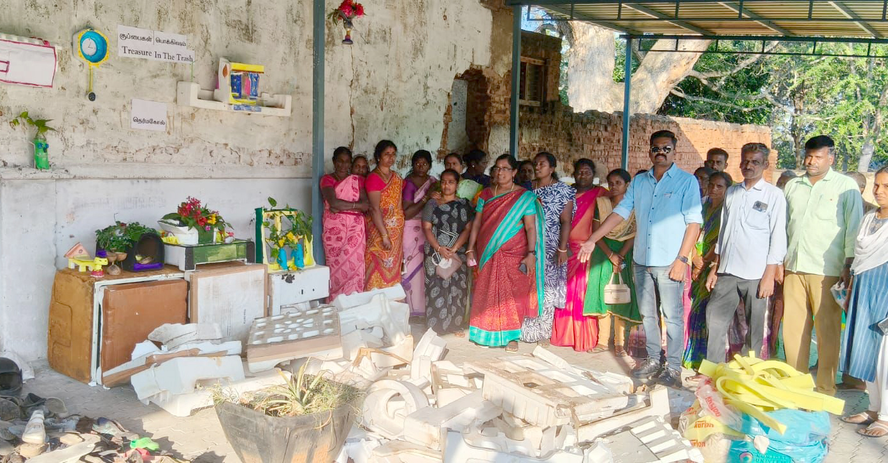

முக்கிய செய்தி தலைப்பு
இந்த இடத்தில் முக்கிய செய்தியின் சுருக்கம் வரும்...
நகராட்சி குப்பை திருவிழா கழிவு சேகரிப்பு: கழிவுகளில் இருந்து கலைப்பொருட்கள்

alt="கூடலூர் குப்பை திருவிழா கழிவு சேகரிப்பு">கூடலூர் நகராட்சியில் நடைபெற்ற குப்பை திருவிழா கழிவு சேகரிப்பு இயக்கத்தில், கழிவுகளில் இருந்து கலைப்பொருட்கள் செய்யப்பட்டு பொருட்காட்சி அமைக்கப்பட்டது.
முழு செய்தி படிக்க →குமுளி ரயில்வே திட்டம் குறித்து எம்.பி விளக்கம்

குமுளி ரயில்வே திட்டம் தொடர்பாக நாடாளுமன்ற உறுப்பினர் முக்கிய தகவல்களை வெளியிட்டார்...
முழு செய்தி படிக்க →